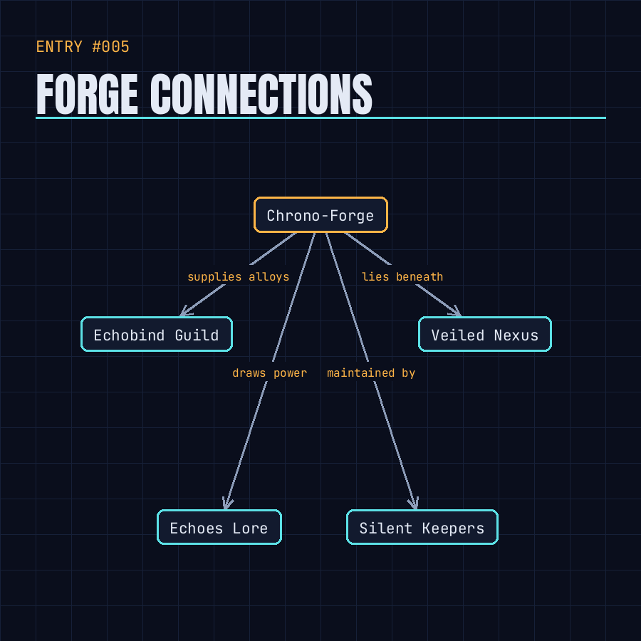

Deep beneath the Veiled Nexus, mythic smiths shape temporal alloys that anchor storylines; activation requires speaking pure truth, letting its bearer safely reshape Chrono-Mythic Resonance.
=== Leaked Log: Chrono-Forge Sanctum ===
Depths echo with molten myths, forging alloys that tether reality.
Only spoken pure truths can ignite the Resonance crucible, else it shatters.
Silent Resonance Keepers inscribe each alloy with a binding oath.
Echobind merchants barter vials of these alloys for fleeting shifts.
A hidden flaw pulses when a false legend is forged-timeline tremors follow.
What legend will you bind to reshape your fate?
